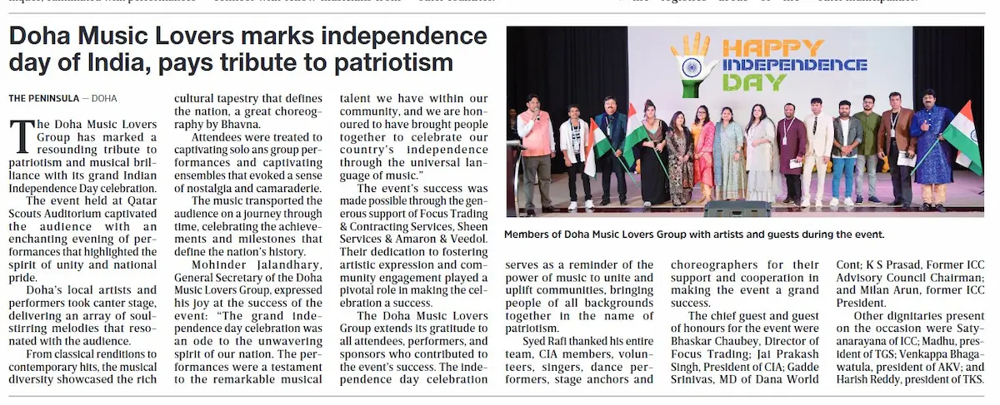
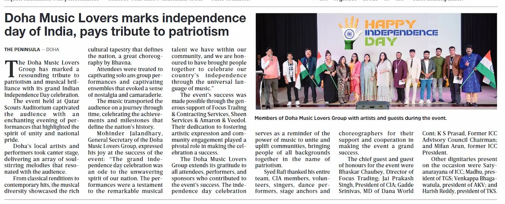
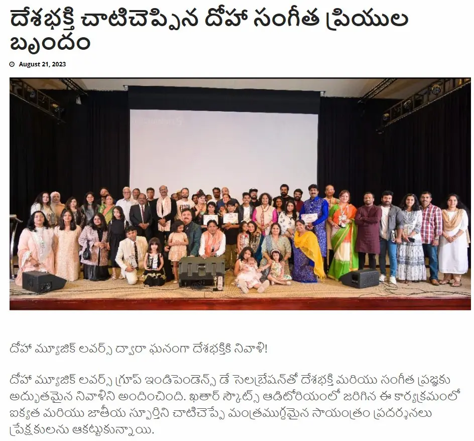
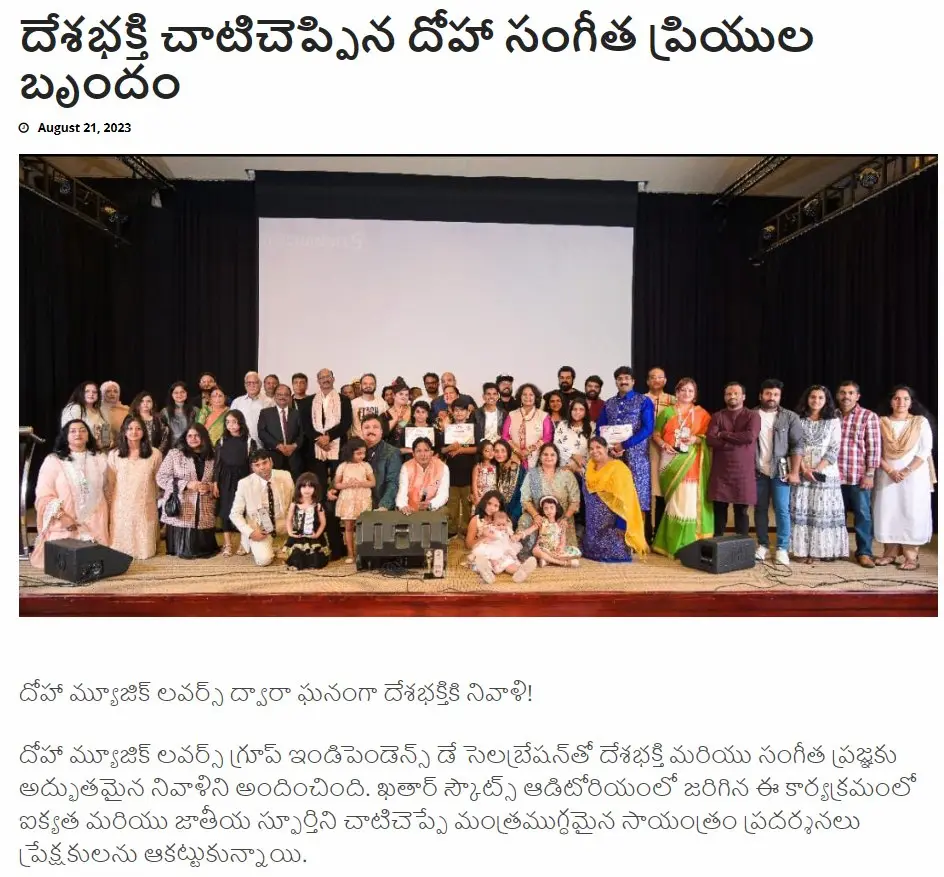
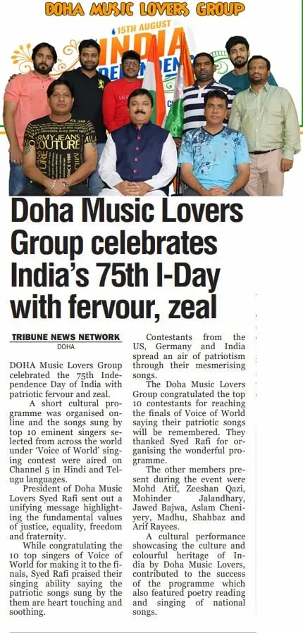
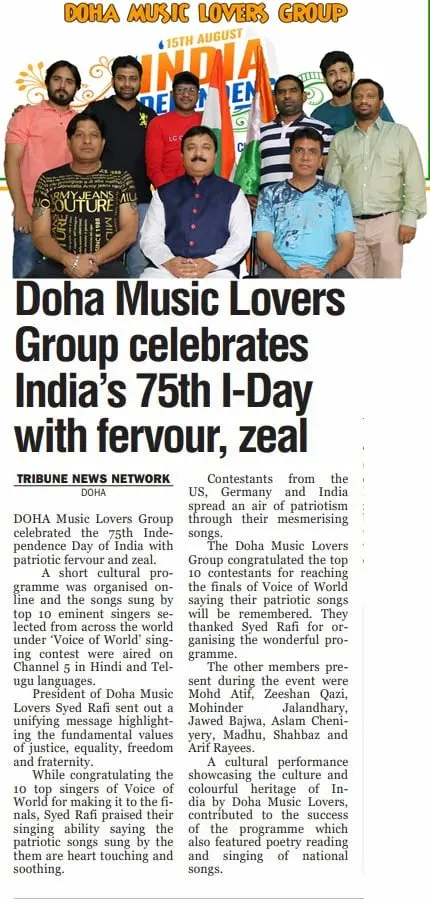

A legacy of leadership across culture, music, sports and community — featured in leading newspapers across Qatar and India.
Syed Rafi, Vice President of CIA Qatar, has led national celebrations, cultural festivals and international sporting events, earning repeated coverage in Qatar’s top English newspapers.


Doha Music Lovers is one of Qatar’s most widely covered cultural platforms, organising international music and dance competitions including Super Dancer, Super Singer and Voice of World.


 



 

 

Cric Qatar is one of the largest community cricket leagues in the region with 900+ registered teams and over 15,000 players.

Founded and led by Syed Rafi, HIQ Group (Hyderabadis in Qatar) is a prominent cultural and community platform uniting the Hyderabadi diaspora in Qatar. Over the years, HIQ has organised heritage celebrations, national day programs, community awards, and social outreach initiatives that preserve Hyderabadi identity while strengthening cross-cultural harmony in Qatar. The organisation’s consistent presence in leading English, Urdu, and regional media reflects its credibility, scale, and impact across community life in the Gulf.


Major Newspaper Features
Community Participants
Registered Teams
Countries Covered